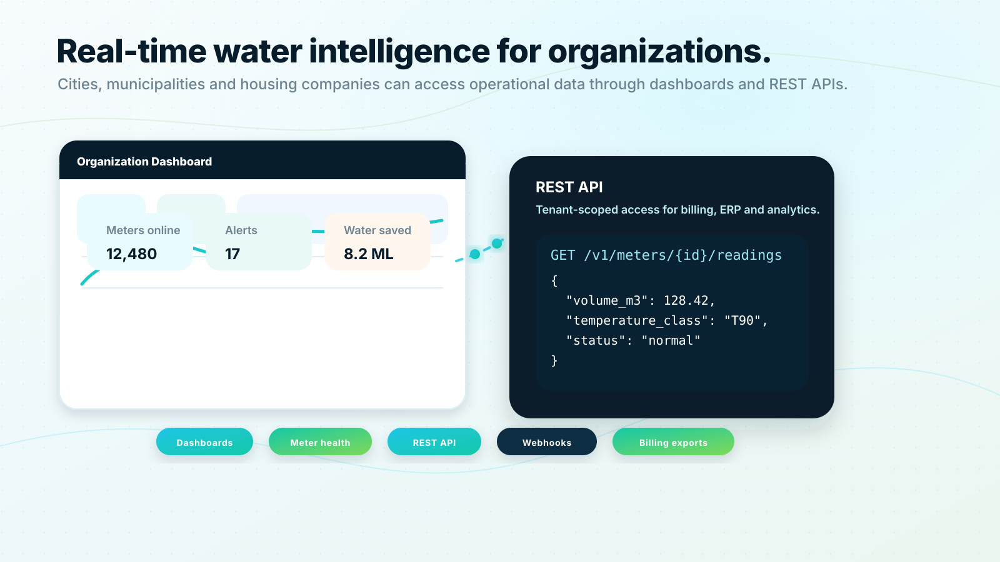

Security:
OAuth 2.0 client credentials, tenant separation and role-based scopes.
Data access
Cities, municipalities, housing companies and portfolio owners can retrieve water meter data directly from QualMeters. The API is designed to support billing workflows, operational dashboards, municipal systems, property platforms and analytics.

REST API
Billing and cost allocation: Retrieve readings by property, apartment, meter and time period.
Municipal water insight: Access consumption data for planning, reporting and demand analysis.
Property dashboards: Integrate water consumption and alert states into existing property management systems.
Leak workflows: Pull alerts into maintenance ticketing tools or notification systems.
Data exports: Support CSV, Excel and scheduled exports for teams that are not ready for full API integration.
REST API
The public API should be versioned and tenant-scoped.
GET /v1/meters
GET /v1/meters/{meterId}
GET /v1/meters/{meterId}/readings
GET /v1/properties/{propertyId}/readings
GET /v1/apartments/{apartmentId}/consumption-summary
GET /v1/alerts
GET /v1/device-health
POST /v1/webhooksREST API
OAuth 2.0 client credentials, tenant separation and role-based scopes.
Pagination, idempotency keys where relevant, clear retry behavior and API status monitoring.
Reading quality flags, source timestamps, received timestamps and estimated reading markers.
JSON responses, stable versioning, webhooks and export options.
API access logs and traceability for sensitive operations.
REST API
Our integration planning starts with your systems, required data fields and operational workflow.
Request API consultationSales consultation
Share your building type, meter count, communication requirements and integration needs. QualMeters will help you map the right deployment model and next steps.
No obligation. We will start by understanding your existing meters, buildings and goals.
 Request a demo
Request a demo